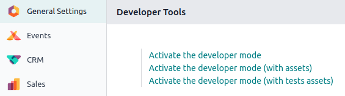

Developer mode (debug mode)¶
The developer mode, also known as debug mode, unlocks access to advanced tools and settings in Odoo.
Warning
Proceed with caution, as some developer tools and technical settings are considered advanced and may have associated risks. Only use them if you understand the implications and are confident in your actions.
Note
The developer mode is also available with assets, which are used to debug JavaScript code, and with tests assets, which are used to run test tours.
Activation¶
To activate it, open the Settings app, scroll down to the Developer Tools section, and click Activate the developer mode.
Once activated, the Deactivate the developer mode option becomes available.
To activate the developer mode from anywhere in the database, add ?debug=1 to the URL after
/web (e.g., https://example.odoo.com/web?debug=1#action=menu&cids=1). To deactivate it, use
?debug=0 instead.
Use ?debug=assets to activate the developer mode with assets and ?debug=tests to activate it
with tests assets.
Tip
Open the command palette by pressing Ctrl + K or Cmd ⌘ + K, then type debug to
activate the developer mode with assets or deactivate it.
Browser extension
The Odoo Debug browser extension adds an icon to toggle developer mode on or off from the browser’s toolbar. It is available on the Chrome Web Store and Firefox Add-ons.
Developer tools and technical menu¶
Once the developer mode is activated, the developer tools can be accessed by clicking the (bug) icon. The menu contains tools useful for understanding or editing technical data, such as a view’s field, filters, or actions. The options available depend on where the menu is accessed from.

Database administrators can access the technical menu from the Settings app. It contains advanced database settings, such as ones related to the database structure, security, actions, etc.